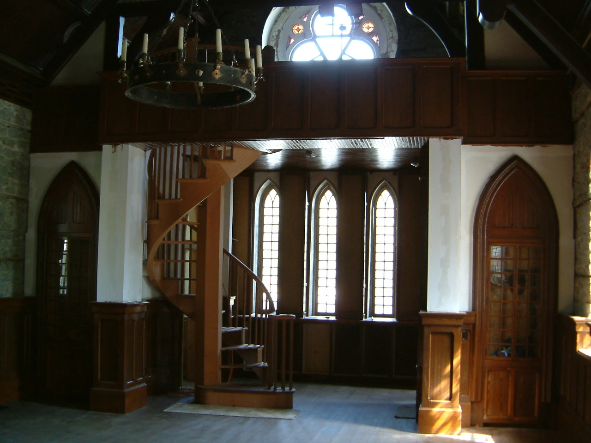
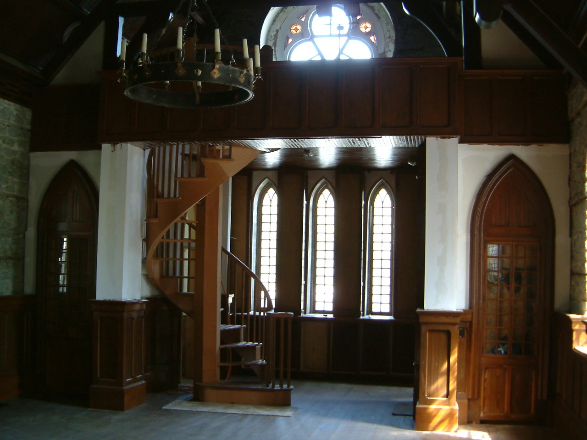
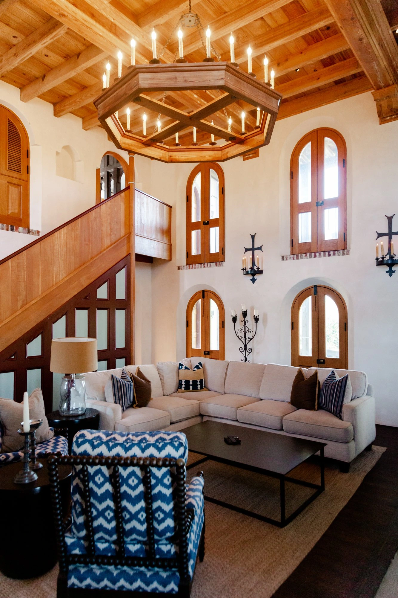
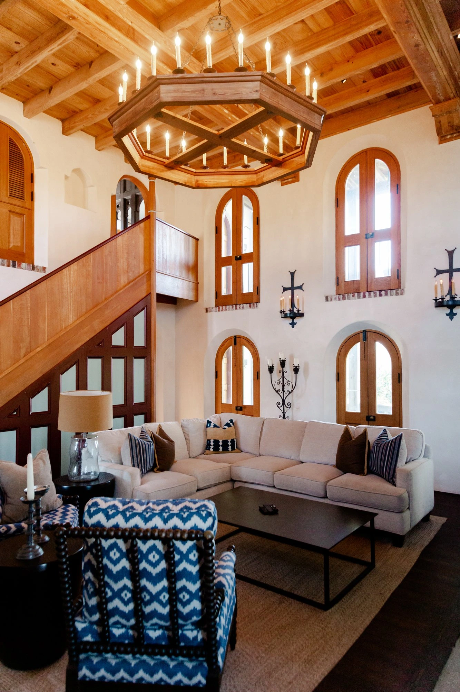

Fort Sullivan
Fort Sullivan is a small beach castle on Sullivan’s Island at the foot of Fort Moultrie National Historic Park. Comprised of a c. 1891 former chapel and c. 2010 addition (the Mugdock Keep), it was designed as a comfortable bastion of hospitality for family and friends to enjoy time at the beach.

 


St. James
The historic c.1858 St. James Methodist Church—most recently home to the Karpeles Manuscript Library Museum—is being fully restored to create a vibrant new destination in the heart of downtown Charleston, featuring an elegant event venue, neighborhood café, and five thoughtfully designed short-term rental residences.
 


414 Whilden
Embedded in the Earl’s Court neighborhood, this unassuming commercial building was fully renovated to house two vibrant artist galleries, demonstrating the potential for small-scale adaptive reuse to foster local culture.